资源
课程
An Introduction to Scripting
将视图改成如下图所示，拖动视图的右上角可以分离视图：
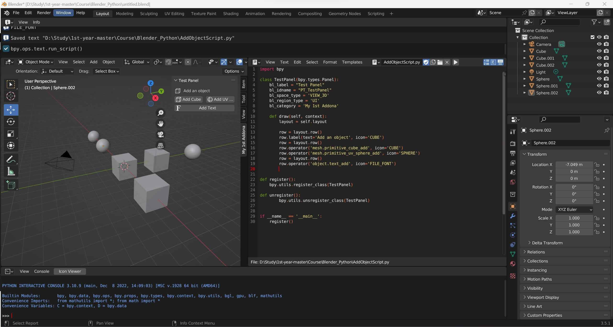
编写 python 代码：
1 2 3 4 5 6 7 8 9 10 11 12 13 14 15 16 17 18 19 20 21 22 23 24 25 26 27 28 29 30 import bpyclass TestPanel (bpy.types.Panel):"Test Panel" "PT_TestPanel" 'VIEW_3D' 'UI' 'My 1st Addona' def draw (self, context ):self .layout'Add an object' , icon='CUBE' )'mesh.primitive_cube_add' , icon='CUBE' )'mesh.primitive_uv_sphere_add' , icon='SPHERE' )'object.text_add' , icon='FILE_FONT' )def register ():def unregister ():if __name__ == '__main__' :
这段 python 代码是在 Blender 中添加一个面板（Panel），面板的名称为“Test Panel”，在 3D 视窗中显示，属于 UI 面板类型，属于"My 1st Addona"类别。这个面板里面添加了三个按钮，分别为添加一个立方体、添加一个球体、添加一个文字。
具体解释如下：
第一行导入了 blender 的 Python API，可以让我们在 Python 中使用 Blender 的功能。
接下来定义了一个名为 TestPanel 的类，该类继承自 bpy.types.Panel，用于创建面板。bl_label 表示显示的名称，bl_idname 是给面板加上一个独有的 ID，可以在其他地方调用它，bl_space_type 表示要显示在哪种编辑器空间中，这里是VIEW_3D 3D 视窗中显示，bl_region_type 表示要显示在哪个区域内，这里是’UI’ 用户界面标签页。bl_category 表示在哪个类别下进行分组，这里将其放在“My 1st Addona”。
然后是 draw 函数，用于绘制面板上的组件。self.layout 是布局对象，代表整个面板的布局。通过 layout 对象的 row()函数，可以创建一行组件。在这个例子中，首先创建一行 label 文本，然后又创建两个 button，分别调用了mesh.primitive_cube_add添加立方体，mesh.primitive_uv_sphere_add添加球体，最后再创建一个添加文字的按钮。
register()函数使用bpy.utils.register_class()方法将 TestPanel 类注册到 Blender 中，使其可用。
unregister()函数使用bpy.utils.unregister_class()方法取消注册 TestPanel 类。
最后检查脚本是否在 Blender 内运行，如果是，则执行 register()函数。
在 3D Viewport 视图下按 n 可以打开面板。
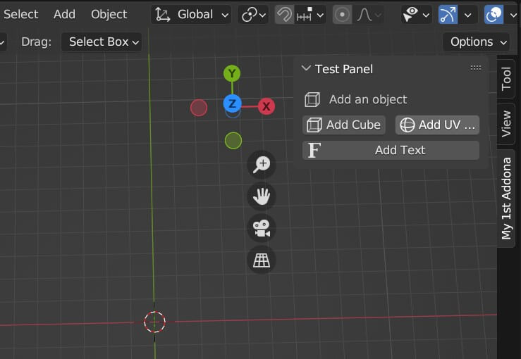
面板的图标名称可以通过Edit-Preferences-Add-ons-搜索icon-Icon Viewer的方式找到：
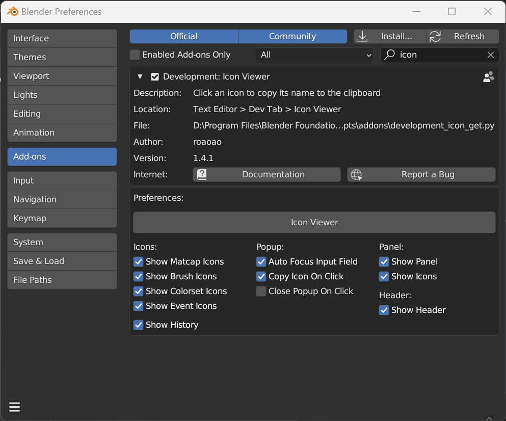
带创建物体的英文名称可以通过下图方式找到：
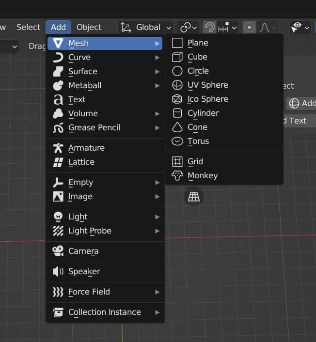
Finishing the Object Adder Add-on
继续完善之前写的插件：
1 2 3 4 5 6 7 8 9 10 11 12 13 14 15 16 17 18 19 20 21 22 23 24 25 26 27 28 29 30 31 32 33 34 35 36 37 38 39 40 41 42 43 44 45 46 47 48 49 50 51 52 53 54 55 56 57 58 59 60 61 62 63 64 65 66 67 68 69 70 71 72 73 74 75 76 77 78 79 80 81 82 83 84 85 86 87 88 89 90 91 92 93 94 bl_info = {'name' : 'Object Adder' ,'author' : 'Darkfall' ,'version' : (1 , 0 ),'blender' : (3 , 51 , 0 ),'location' : 'View3d > Tool' ,'warning' : '' ,'wiki_url' : '' ,'category' : 'Add Mesh' ,import bpyclass TestPanel (bpy.types.Panel):"Test Panel" "PT_TestPanel" 'VIEW_3D' 'UI' 'My 1st Addona' def draw (self, context ):self .layout1.4 'Add an object' , icon='OBJECT_ORIGIN' )'mesh.primitive_cube_add' , icon='CUBE' )'mesh.primitive_uv_sphere_add' , icon='SPHERE' )'object.text_add' , icon='FILE_FONT' )class PanelA (bpy.types.Panel):"Scale" "PT_PanelA" 'VIEW_3D' 'UI' 'My 1st Addona' 'PT_TestPanel' 'DEFAULT_CLOSED' }def draw (self, context ):self .layoutobject 'Select an option to scale your object.' , icon='FONT_DATA' )'transform.resize' )1.2 'scale' )class PanelB (bpy.types.Panel):"Specials" "PT_PanelB" 'VIEW_3D' 'UI' 'My 1st Addona' 'PT_TestPanel' 'DEFAULT_CLOSED' }def draw (self, context ):self .layout'Select a Special Option' , icon='COLOR_BLUE' )'object.shade_smooth' , icon='MOD_SMOOTH' , text='Set Smooth Shading' )'object.subdivision_set' )'object.modifier_add' )def register ():def unregister ():if __name__ == '__main__' :
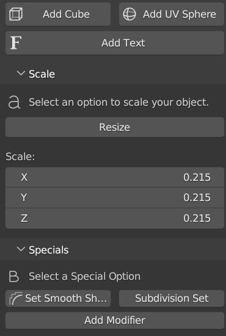
也可以通过 Edit-Preferences-Install... 的方式安装其他人写好的插件：
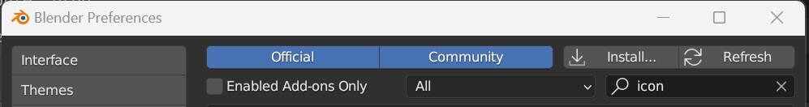
Preview: The Shader Library Add-on (Python Tutorial Result)
How to create an Addon (The Shader Library)
教你怎么用 Python 写一个 Shader 插件：
调整窗口布局，一个 Shader Editor，一个 3D Viewport，一个 Text Editor：
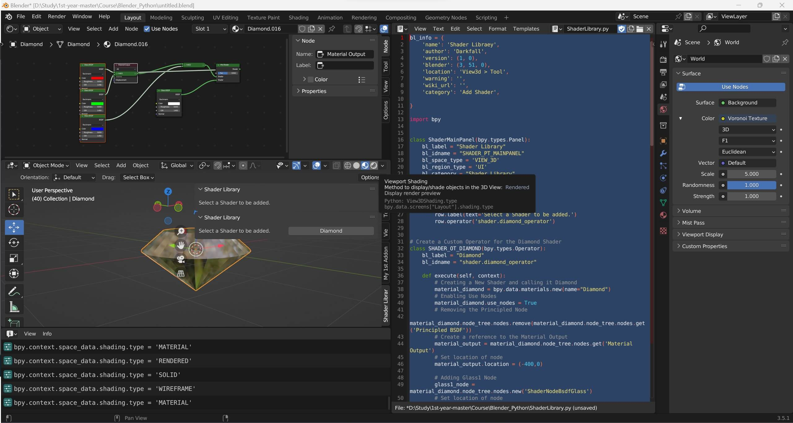
这段代码定义了一个名为"Shader Libraey"的 Blender 插件，该插件提供了一个名为"Diamond"的着色器，可以在 3D 视图的工具栏中的"Shader Library"选项卡中访问。当用户点击该选项卡时，将显示一个面板，其中包含一个"选择要添加的着色器"标签和一个"Diamond"按钮，当用户单击该按钮时，将创建一个着色器并应用于活动对象上。
具体而言，该代码文件首先定义了包含插件名称、作者、版本等信息的字典。接下来定义了一个面板类 ShaderMainPanel，它作为面板的主要控件，用于渲染用户界面。该面板包含一个文本标签和一个名为"shader.diamond_operator"的操作器，后者定义了所需的 Diamond 着色器。在操作器的 execute()函数中，创建一个新材质，激活其节点编辑模式，删除默认的 Principled BSDF 节点，然后创建和连接多个颜色为红、绿、蓝的玻璃节点，最后创建混合节点和连接多个节点以生成最终的 Diamond 着色器，将其分配给当前活动对象。
最后，定义了两个函数 register()和 unregister()，它们用于在 Blender 应用程序中注册和取消注册插件的类。
1 2 3 4 5 6 7 8 9 10 11 12 13 14 15 16 17 18 19 20 21 22 23 24 25 26 27 28 29 30 31 32 33 34 35 36 37 38 39 40 41 42 43 44 45 46 47 48 49 50 51 52 53 54 55 56 57 58 59 60 61 62 63 64 65 66 67 68 69 70 71 72 73 74 75 76 77 78 79 80 81 82 83 84 85 86 87 88 89 90 91 92 93 94 95 96 97 98 99 100 101 102 103 104 105 106 107 108 109 110 111 112 113 114 115 116 117 118 119 120 121 122 123 124 125 126 127 128 129 130 131 132 133 134 135 136 137 138 139 bl_info = {'name' : 'Shader Libraey' ,'author' : 'Darkfall' ,'version' : (1 , 0 ),'blender' : (3 , 51 , 0 ),'location' : 'View3d > Tool' ,'warning' : '' ,'wiki_url' : '' ,'category' : 'Add Shader' ,import bpyclass ShaderMainPanel (bpy.types.Panel):"Shader Library" "SHADER_PT_MAINPANEL" 'VIEW_3D' 'UI' "Shader Library" def draw (self, context ):self .layout'Select a Shader to be added.' )'shader.diamond_operator' )class SHADER_OT_DIAMOND (bpy.types.Operator):"Diamond" "shader.diamond_operator" def execute (self, context ):"Diamond" )True 'Principled BSDF' ))'Material Output' )400 ,0 )'ShaderNodeBsdfGlass' )600 ,0 )0 ].default_value = (1 , 0 , 0 , 1 )2 ].default_value = 1.446 'ShaderNodeBsdfGlass' )600 , -150 )0 ].default_value = (0 , 1 , 0 , 1 )2 ].default_value = 1.450 'ShaderNodeBsdfGlass' )600 , -300 )0 ].default_value = (0 , 0 , 1 , 1 )2 ].default_value = 1.450 'ShaderNodeAddShader' )400 ,-50 )"Add 1" True False 'ShaderNodeAddShader' )0 ,0 )"Add 2" True False 'ShaderNodeBsdfGlass' )150 , -150 )0 ].default_value = (1 , 1 , 1 , 1 )2 ].default_value = 1.450 False 'ShaderNodeMixShader' )200 ,0 )False 0 ], add1_node.inputs[0 ])0 ], add1_node.inputs[1 ])0 ], add2_node.inputs[0 ])0 ], add2_node.inputs[1 ])0 ], mix1_node.inputs[1 ])0 ], mix1_node.inputs[2 ])0 ], material_output.inputs[0 ])object .active_material = material_diamondreturn {'FINISHED' }def register ():def unregister ():if __name__ == '__main__' :
Edit-Preferences-Add-ons-搜索extra-Add Mesh: Extra Objects，这样 Blender 中就可以创建钻石形状的物体。
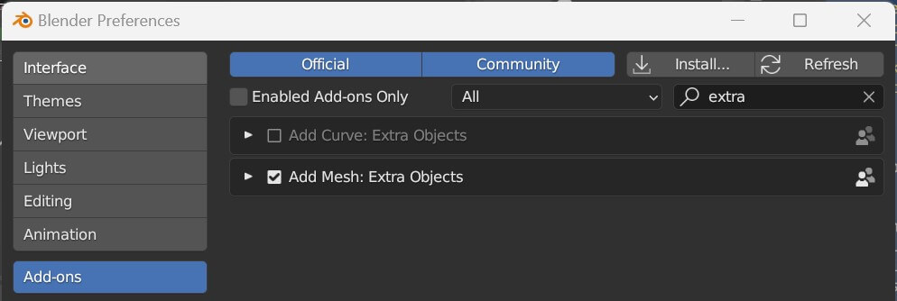
创建一个钻石形状的物体，运行代码，点击 Diamond，就给该物体添加了一个 Shader：
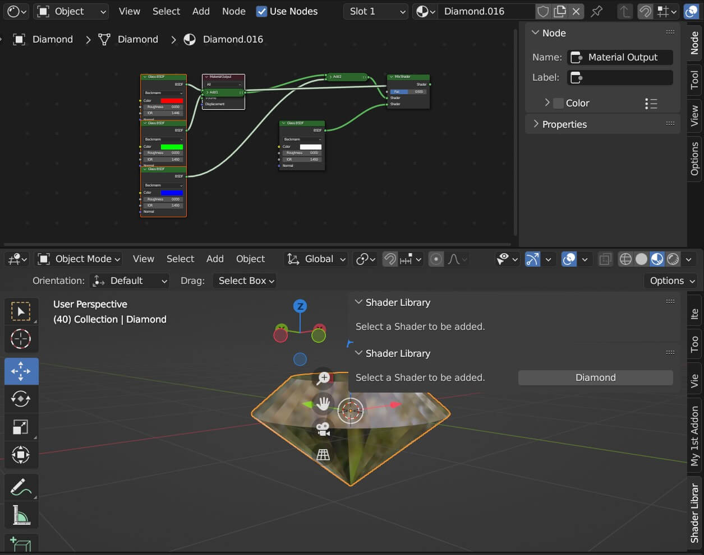
可以从 Darkfall : Blender Python Tutorial: How to create an Add-on - The Shader Library [bpy] (darkfallblender.blogspot.com) 中的 ShaderLibrary.py - Google Drive 下载作者写的更复杂的 ShaderLibrary.py。
Add a keyframe & Modifier with Python [learn python for beginners]
这段代码定义了一个名为"Hello World Panel"的 Blender 插件，该插件提供了一个名为"Neon"的着色器，可以在 3D 视图的工具栏中的"Name your New Tab"选项卡中访问。当用户点击该选项卡时，将显示一个面板，其中包含一个"Add Neon Shader"按钮，当用户单击该按钮时，将创建一个着色器并应用于活动对象上。
具体而言，该代码文件首先定义了一个名为 HelloWorldPanel 的面板类，该类作为面板的主要控件，用于渲染用户界面。该面板包含一个按钮，名为"shader.neon_operator"。在操作器的 execute()函数中，创建一个新材质，激活其节点编辑模式，删除默认的 Principled BSDF 节点，然后创建和连接多个颜色为蓝色、灰色的玻璃节点，最后创建混合节点和连接多个节点以生成最终的 Neon 着色器，将其分配给当前活动对象。
最后，定义了两个函数 register()和 unregister()，它们用于在 Blender 应用程序中注册和取消注册插件的类。
1 2 3 4 5 6 7 8 9 10 11 12 13 14 15 16 17 18 19 20 21 22 23 24 25 26 27 28 29 30 31 32 33 34 35 36 37 38 39 40 41 42 43 44 45 46 47 48 49 50 51 52 53 54 55 56 57 58 59 60 61 62 63 64 65 66 67 68 69 70 71 72 73 74 75 76 77 import bpyclass HelloWorldPanel (bpy.types.Panel):"""Creates a Panel in the Object properties window""" "Hello World Panel" "OBJECT_PT_hello" 'VIEW_3D' 'UI' "Name your New Tab" def draw (self, context ):self .layoutobject 'shader.neon_operator' )class SHADER_OT_NEON (bpy.types.Operator):'Add Neon Shader' 'shader.neon_operator' def execute (self, context ):"Neon" )True 'Principled BSDF' ))'Material Output' )400 ,0 )'ShaderNodeEmission' )200 ,0 )0 ].default_value = (0.59 , 0.76 , 1 , 1 )1 ].default_value = 2 1 ].keyframe_insert('default_value' , frame=cur_frame)f'nodes["{emiss_node.name} "].inputs[1].default_value' if fc:'NOISE' )10 1 0 ], material_output.inputs[0 ])return {'FINISHED' }def register ():def unregister ():if __name__ == "__main__" :
创建了一个 shader 和一个 modifiers，使得绑定的物体一闪一闪的。
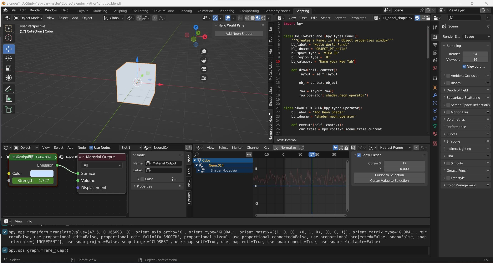
定义了一个 WM_OT_myOp 类，提供了一个 dialog box 提示，原视频的 Blender 版本有点旧，替换了一些代码：
1 2 3 4 5 6 7 8 9 10 11 12 13 14 15 16 17 18 19 20 21 22 23 24 25 26 27 28 class WM_OT_myOp (bpy.types.Operator):"""Open the Add Cube Dialog Box""" 'Add Cube Dialog Box' 'wm.myop' 'Enter Text' , default='' )'Scale' , default=(1 , 1 , 1 ))def execute (self, context ):self .textself .scaleobject 0 ] = s[0 ]1 ] = s[1 ]2 ] = s[2 ]return {'FINISHED' }def invoke (self, context, event ):return context.window_manager.invoke_props_dialog(self )
整合到之前的 AddObjectScript.py 中，代码 row.operator('wm.myop', icon='CUBE', text='Cube') 将创建的 bl_idname = 'wm.myop' 的 WM_OT_myOp 加入到 TestPanel 中：
1 2 3 4 5 6 7 8 9 10 11 12 13 14 15 16 17 18 19 20 21 22 23 24 25 26 27 28 29 30 31 32 33 34 35 36 37 38 39 40 41 42 43 44 45 46 47 48 49 50 51 52 53 54 55 56 57 58 59 60 61 62 63 64 65 66 67 68 69 70 71 72 73 74 75 76 77 78 79 80 81 82 83 84 85 86 87 88 89 90 91 92 93 94 95 96 97 98 99 100 101 102 103 104 105 106 107 108 109 110 111 112 113 114 115 116 117 118 119 120 121 122 123 124 125 126 127 128 bl_info = {'name' : 'Object Adder' ,'author' : 'Darkfall' ,'version' : (1 , 0 ),'blender' : (3 , 51 , 0 ),'location' : 'View3d > Tool' ,'warning' : '' ,'wiki_url' : '' ,'category' : 'Add Mesh' ,import bpyclass TestPanel (bpy.types.Panel):"Test Panel" "PT_TestPanel" 'VIEW_3D' 'UI' 'My 1st Addona' def draw (self, context ):self .layout1.4 'Add an object' , icon='OBJECT_ORIGIN' )'wm.myop' , icon='CUBE' , text='Cube' )'mesh.primitive_cube_add' , icon='CUBE' )'mesh.primitive_uv_sphere_add' , icon='SPHERE' )'object.text_add' , icon='FILE_FONT' )class PanelA (bpy.types.Panel):"Scale" "PT_PanelA" 'VIEW_3D' 'UI' 'My 1st Addona' 'PT_TestPanel' 'DEFAULT_CLOSED' }def draw (self, context ):self .layoutobject 'Select an option to scale your object.' , icon='FONT_DATA' )'transform.resize' )1.2 'scale' )class PanelB (bpy.types.Panel):"Specials" "PT_PanelB" 'VIEW_3D' 'UI' 'My 1st Addona' 'PT_TestPanel' 'DEFAULT_CLOSED' }def draw (self, context ):self .layout'Select a Special Option' , icon='COLOR_BLUE' )'object.shade_smooth' , icon='MOD_SMOOTH' , text='Set Smooth Shading' )'object.subdivision_set' )'object.modifier_add' )class WM_OT_myOp (bpy.types.Operator):"""Open the Add Cube Dialog Box""" 'Add Cube Dialog Box' 'wm.myop' 'Enter Text' , default='' )'Scale' , default=(1 , 1 , 1 ))def execute (self, context ):self .textself .scaleobject 0 ] = s[0 ]1 ] = s[1 ]2 ] = s[2 ]return {'FINISHED' }def invoke (self, context, event ):return context.window_manager.invoke_props_dialog(self )def register ():def unregister ():if __name__ == '__main__' :
开跑！点击 OK 就会创建一个相应名称和 Scale 的立方体。
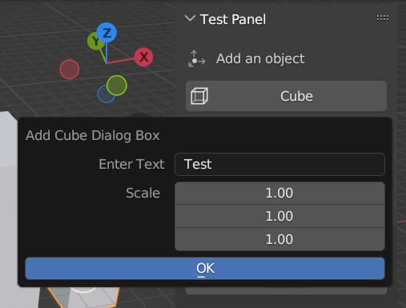
Creating the Text Tool Add-on
这是一个简单的 Blender 插件，提供了一个 “Text Tool” 面板，用于添加文本对象。插件为用户提供了一些选项，如文本内容、比例尺度、是否居中编辑原点、是否挤压等。
在代码的开头，bl_info 字典定义了插件的基本信息，包括名称、作者、版本、Blender 版本要求、描述等等。这些信息将会在 Blender 中进行显示和识别。
OBJECT_PT_TextTool 类定义了插件的 UI 面板，在 View3D 视图中的 “Add” 菜单下可以找到它。面板中有一个按钮，用于调用 WM_OT_textOp 操作器类，添加指定的文本对象。
WM_OT_textOp 操作器类定义了添加文本对象的过程，并通过执行 execute() 方法在场景中添加文本对象。使用 invoke() 方法显示属性对话框，以便用户可以设置文本对象的属性。
在代码的末尾，register() 方法用于注册插件的类，unregister() 方法用于注销这些类。这使得 Blender 工具栏能够正确地显示插件，并在需要时供用户使用。
1 2 3 4 5 6 7 8 9 10 11 12 13 14 15 16 17 18 19 20 21 22 23 24 25 26 27 28 29 30 31 32 33 34 35 36 37 38 39 40 41 42 43 44 45 46 47 48 49 50 51 52 53 54 55 56 57 58 59 60 61 62 63 64 65 66 67 68 69 70 71 72 73 74 75 76 bl_info = {"name" : "Text Tool" ,"author" : "Darkfall" ,"version" : (1 , 0 ),"blender" : (3 , 51 , 0 ),"location" : "View3D > Add > Mesh > New Object" ,"description" : "Adds a new Mesh Object" ,"warning" : "" ,"doc_url" : "" ,"category" : "Add Mesh" ,import bpyclass OBJECT_PT_TextTool (bpy.types.Panel):"""Creates a Panel in the Object properties window""" "Text Tool" "OBJECT_PT_TextTool" 'VIEW_3D' 'UI' 'Text Tool' def draw (self, context ):self .layout'wm.textop' , text='Add Text' , icon='OUTLINER_OB_FONT' )class WM_OT_textOp (bpy.types.Operator):'Text Tool Operator' 'wm.textop' 'Enter Text' , default='' )'Scale' , default=(1 , 1 , 1 ))'Center Origin' , default=False )'Extrude' , default=False )'Extrude Amount' , default=0.06 )def execute (self, context ):self .textself .scaleself .centerself .extrudeself .extrude_amountobject .text_add(enter_editmode=True , location=(0 , 0 , 0 ))type ='PREVIOUS_WORD' )object .editmode_toggle()if e == True :object .data.extrude = eaif c == True :object .data.align_x = 'CENTER' object .data.align_y = 'CENTER' return {'FINISHED' }def invoke (self, context, event ):return context.window_manager.invoke_props_dialog(self )def register ():def unregister ():if __name__ == "__main__" :
这将创建一个文字，是否居中和具有高度都是可选的。
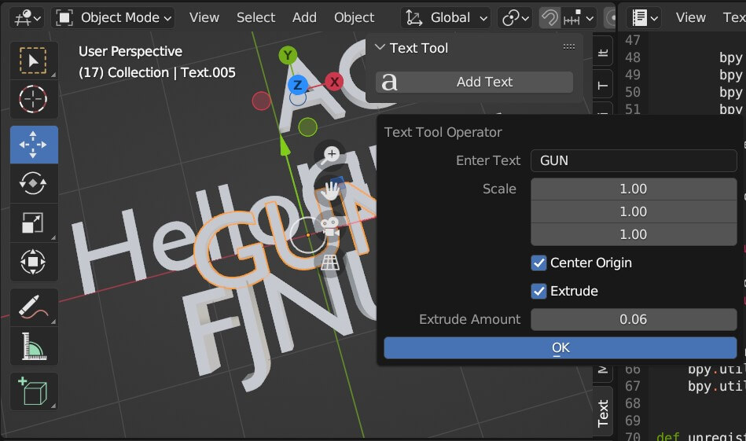
Create Custom Node Group
Blender 的节点组是将多个节点整合在一起，以便于在不同的场景中重复使用。通过创建自定义节点组，用户可以自定义一组节点，然后在需要时将它们重复使用，而无需每次都手动连接一堆节点。
节点组可以包含多个输入和输出，这使得节点的使用更加灵活。例如，可以将某个算法封装在一个自定义节点组中，然后将其作为子程序一样反复使用，从而使整个工作流程更加高效。
除此之外，节点组还可以将多个节点封装在一起，隐藏内部的复杂性，从而简化整个项目的结构和管理。如果想要共享或者将你的节点组应用到其他项目中，你可以将它们保存为 .blend 文件或者 Python 脚本。
总之，节点组是 Blender 中非常实用的功能之一，它可以帮助用户提高工作效率，并简化项目管理流程，同时也使 Blender 更加强大和灵活。
这段代码是一个 Blender 插件，用于创建自定义节点组。
首先，代码定义了一个 NODE_PT_MAINPANEL 类，继承自 bpy.types.Panel 类，表示一个面板面板，包含在节点编辑器（NODE_EDITOR）中的 UI 区域（UI），并将其放在「New Tab」分类下。bl_label 设置面板名称为「Custom Node Group」，bl_idname 表示唯一 ID，用于在代码中引用该面板。
create_test_group() 函数用于创建节点组。它接收三个参数：context 对象、operator 对象和 group_name 字符串。此函数使用 bpy.data.node_groups.new() 创建一个新的节点组对象，并设置其类型为 'CompositorNodeTree'，意味着创建一个合成节点树。接下来，该函数创建输入和输出节点，以及两个中间节点，并将它们连接起来。最后，该函数返回新创建的节点组对象。
NODE_OT_TEST 类继承自 bpy.types.Operator 类，代表一个操作员。bl_label 表示该操作员的名称，bl_idname 表示唯一 ID，用于在代码中引用该操作员。execute() 方法在执行该操作员时被调用，可以看到该方法调用 create_test_group() 函数创建自定义节点组，并将其添加到场景中。
最后，register() 和 unregister() 函数分别用于注册和注销 Blender 插件。register_class() 和 unregister_class() 方法被用于添加和移除定义的面板（NODE_PT_MAINPANEL）和操作员（NODE_OT_TEST），使它们在 Blender 中可用。if __name__ == "__main__": 代码块用于直接运行该脚本。这个代码块中的 register() 方法将插件注册到 Blender 中，使它可以在运行时使用。
1 2 3 4 5 6 7 8 9 10 11 12 13 14 15 16 17 18 19 20 21 22 23 24 25 26 27 28 29 30 31 32 33 34 35 36 37 38 39 40 41 42 43 44 45 46 47 48 49 50 51 52 53 54 55 56 57 58 59 60 61 62 63 64 65 66 67 68 69 70 71 72 73 74 75 76 77 78 79 80 81 82 83 84 85 import bpyclass NODE_PT_MAINPANEL (bpy.types.Panel):"Custom Node Group" "NODE_PT_MAINPANEL" 'NODE_EDITOR' 'UI' 'New Tab' def draw (self, context ):self .layout'node.test_operator' )def create_test_group (context, operator, group_name ):True 'CompositorNodeTree' )'NodeGroupInput' )200 ,0 )'NodeSocketFloat' ,'Factor Value' ) 'NodeSocketColor' ,'Color Input' ) 'NodeGroupOutput' )400 ,0 )'NodeSocketColor' ,'Output' )type = 'CompositorNodeBoxMask' )0 ,0 )1 type = 'CompositorNodeMixRGB' )200 ,0 )True 'OVERLAY' 0 ], mix_node.inputs[1 ])0 ], mix_node.inputs[0 ])1 ], mix_node.inputs[2 ])0 ], group_out.inputs[0 ])return test_groupclass NODE_OT_TEST (bpy.types.Operator):"Add Custom Node Group" "node.test_operator" def execute (self, context ):"Test Node" self , context, custom_node_name)'CompositorNodeGroup' )True 0.5 , 0.4 , 0.3 )return {'FINISHED' }def register ():def unregister ():if __name__ == "__main__" :
Custom Drawing / Layout Improvements
美化了之前 TextTool.py 的界面：
1 2 3 4 5 6 7 8 9 10 11 12 13 14 15 16 17 18 19 20 21 22 23 24 25 26 27 28 29 30 31 32 33 34 35 36 37 38 39 40 41 42 43 44 45 46 47 48 49 50 51 52 53 54 55 56 57 58 59 60 61 62 63 64 65 66 67 68 69 70 71 72 73 74 75 76 77 78 79 80 81 82 83 84 85 86 87 88 89 90 91 92 93 94 95 96 97 98 99 100 101 102 103 104 105 106 107 108 109 110 111 112 113 bl_info = {"name" : "Text Tool" ,"author" : "Darkfall" ,"version" : (1 , 0 ),"blender" : (3 , 51 , 0 ),"location" : "View3D > Add > Mesh > New Object" ,"description" : "Adds a new Mesh Object" ,"warning" : "" ,"doc_url" : "" ,"category" : "Add Mesh" ,import bpyclass OBJECT_PT_TextTool (bpy.types.Panel):"""Creates a Panel in the Object properties window""" "Text Tool" "OBJECT_PT_TextTool" 'VIEW_3D' 'UI' 'Text Tool' def draw (self, context ):self .layout'wm.textop' , text='Add Text' , icon='OUTLINER_OB_FONT' )class WM_OT_textOp (bpy.types.Operator):'Text Tool Operator' 'wm.textop' 'Enter Text' , default='' )'Scale' , default=(1 , 1 , 1 ))'Z up' , default=False )'Center Origin' , default=False )'Extrude' , default=False )'Extrude Amount' , default=0.06 )def draw (self, context ):self .layout1 )'Sample Text' )self , 'text' )self , 'scale' )2 )self , 'rotation' )if self .rotation == True :'Orientation: Z UP' , icon='EMPTY_SINGLE_ARROW' )else :'Orientation: Default' , icon='ARROW_LEFTRIGHT' )self , 'center' )if self .center == True :'Alignment: Center' , icon='ALIGN_CENTER' )else :'Alignment: Default' , icon='ALIGN_LEFT' )self , 'extrude' )if self .extrude == True :self , 'extrude_amount' )def execute (self, context ):self .textself .scaleself .centerself .extrudeself .extrude_amountself .rotationobject .text_add(enter_editmode=True , location=(0 , 0 , 0 ))type ='PREVIOUS_WORD' )object .editmode_toggle()if r == True :object .rotation_euler[0 ] = 1.5708 if e == True :object .data.extrude = eaif c == True :object .data.align_x = 'CENTER' object .data.align_y = 'CENTER' return {'FINISHED' }def invoke (self, context, event ):return context.window_manager.invoke_props_dialog(self )def register ():def unregister ():if __name__ == "__main__" :
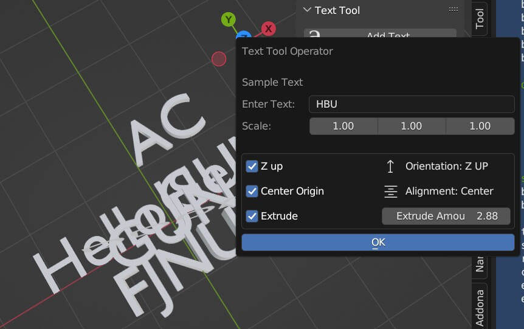
Shortcut / Custom Keymap [learn python for beginners]
修改 popupdialogboxTemplate.py，使其可以通过按下 SHIFT+F 打开 dialog box：
1 2 3 4 5 6 7 8 9 10 11 12 13 14 15 16 17 18 19 20 21 22 23 24 25 26 27 28 29 30 31 32 33 34 35 36 37 38 39 40 41 42 43 44 45 46 47 48 49 50 51 52 53 54 55 import bpyclass WM_OT_myOp (bpy.types.Operator):"""Open the Add Cube Dialog Box""" 'Add Cube Dialog Box' 'wm.myop' 'Enter Text' , default='' )'Scale' , default=(1 , 1 , 1 ))def execute (self, context ):self .textself .scaleobject 0 ] = s[0 ]1 ] = s[1 ]2 ] = s[2 ]return {'FINISHED' }def invoke (self, context, event ):return context.window_manager.invoke_props_dialog(self )def register ():if kc:'3D View' , space_type='VIEW_3D' )'wm.myop' , type ='F' , value='PRESS' , shift=True )def unregister ():for km, kmi in addon_keymaps:if __name__ == '__main__' :
在 3D View 中按下 SHIFT+F 就可以打开 dialogbox：
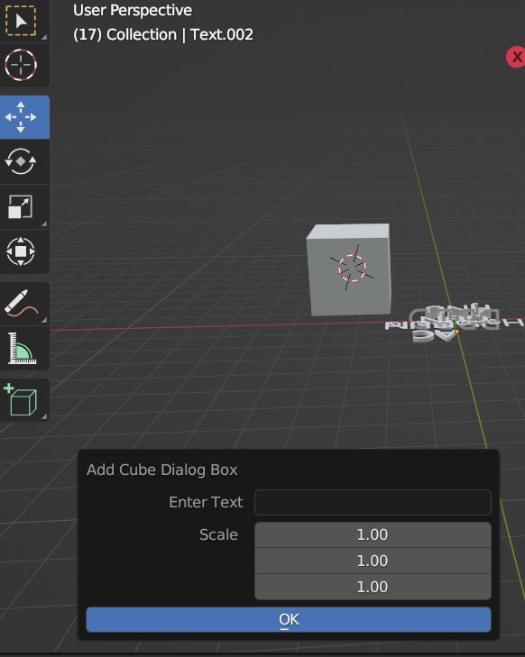